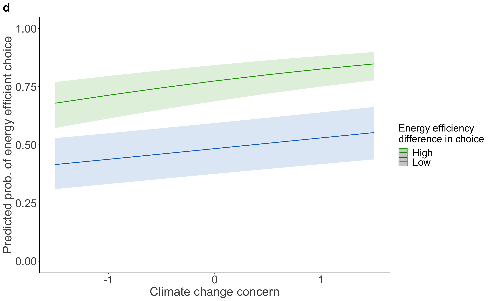
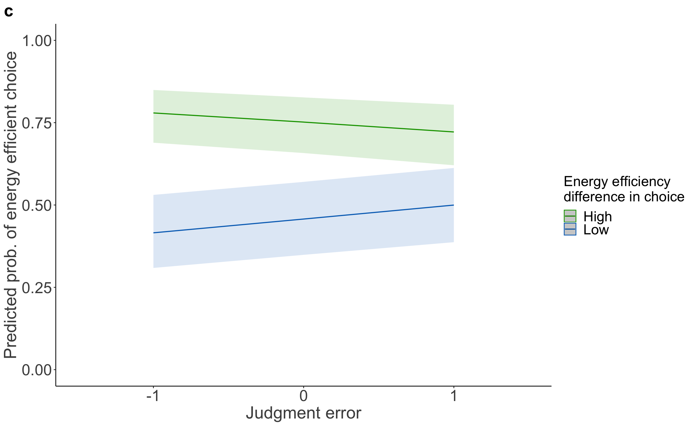
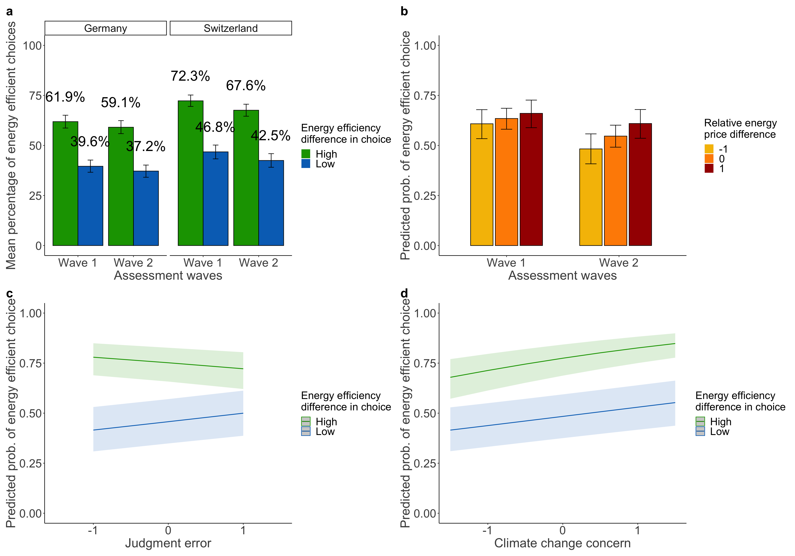

| choice | |||
|---|---|---|---|
| Predictors | Odds Ratios | CI | p |
| (Intercept) | 3.06 | 1.48 – 6.33 | 0.003 |
| price level [2] | 0.24 | 0.21 – 0.27 | <0.001 |
| energy level [Low] | 0.24 | 0.21 – 0.27 | <0.001 |
| concern scaled | 1.65 | 1.44 – 1.89 | <0.001 |
| country [Switzerland] | 2.02 | 1.51 – 2.71 | <0.001 |
| gender [male] | 1.06 | 0.79 – 1.41 | 0.714 |
| age | 1.01 | 1.00 – 1.02 | 0.056 |
| income<1’500- 2’499€ 3’100-4’299CHF | 0.74 | 0.47 – 1.16 | 0.186 |
|
income [2’500- 4’000€ <4’300- 5’899CHF] |
1.02 | 0.66 – 1.59 | 0.913 |
|
income [> 4’000€ >5’900 CHF] |
1.58 | 1.01 – 2.48 | 0.045 |
|
education [obligatory school] |
0.86 | 0.52 – 1.43 | 0.561 |
| education [middle school] | 0.62 | 0.36 – 1.06 | 0.080 |
| education [degree] | 0.72 | 0.42 – 1.22 | 0.218 |
|
energy level [Low] × concern scaled |
0.78 | 0.70 – 0.86 | <0.001 |
| Random Effects | |||
| σ2 | 3.29 | ||
| τ00 m | 4.21 | ||
| ICC | 0.56 | ||
| N m | 1036 | ||
| Observations | 7252 | ||
| Marginal R2 / Conditional R2 | 0.182 / 0.641 | ||
| choice | |||
|---|---|---|---|
| Predictors | Odds Ratios | CI | p |
| (Intercept) | 2.20 | 1.05 – 4.63 | 0.037 |
| price level [2] | 0.23 | 0.20 – 0.27 | <0.001 |
| energy level [Low] | 0.24 | 0.21 – 0.28 | <0.001 |
| mean error scaled | 0.84 | 0.71 – 1.00 | 0.047 |
| country [Switzerland] | 2.04 | 1.51 – 2.76 | <0.001 |
| gender [male] | 0.93 | 0.69 – 1.24 | 0.613 |
| age | 1.01 | 1.00 – 1.02 | 0.004 |
| income<1’500- 2’499€ 3’100-4’299CHF | 0.72 | 0.46 – 1.14 | 0.161 |
|
income [2’500- 4’000€ <4’300- 5’899CHF] |
1.07 | 0.68 – 1.67 | 0.782 |
|
income [> 4’000€ >5’900 CHF] |
1.68 | 1.06 – 2.65 | 0.027 |
|
education [obligatory school] |
0.93 | 0.55 – 1.56 | 0.779 |
| education [middle school] | 0.74 | 0.43 – 1.28 | 0.278 |
| education [degree] | 0.84 | 0.49 – 1.44 | 0.531 |
|
energy level [Low] × mean error scaled |
1.49 | 1.31 – 1.70 | <0.001 |
| Random Effects | |||
| σ2 | 3.29 | ||
| τ00 m | 4.41 | ||
| ICC | 0.57 | ||
| N m | 1036 | ||
| Observations | 7252 | ||
| Marginal R2 / Conditional R2 | 0.163 / 0.642 | ||
| choice | |||
|---|---|---|---|
| Predictors | Odds Ratios | CI | p |
| (Intercept) | 0.40 | 0.14 – 1.13 | 0.084 |
| price level [2] | 0.24 | 0.21 – 0.27 | <0.001 |
| energy level [2] | 4.09 | 3.56 – 4.68 | <0.001 |
| V2 | 1.41 | 0.78 – 2.55 | 0.256 |
| country [Switzerland] | 2.01 | 1.49 – 2.70 | <0.001 |
| gender [male] | 0.93 | 0.70 – 1.24 | 0.631 |
| age | 1.01 | 1.00 – 1.02 | 0.005 |
| income<1’500- 2’499€ 3’100-4’299CHF | 0.68 | 0.43 – 1.08 | 0.100 |
|
income [2’500- 4’000€ <4’300- 5’899CHF] |
1.00 | 0.64 – 1.56 | 0.999 |
|
income [> 4’000€ >5’900 CHF] |
1.60 | 1.02 – 2.50 | 0.042 |
|
education [obligatory school] |
0.88 | 0.53 – 1.47 | 0.630 |
| education [middle school] | 0.70 | 0.41 – 1.19 | 0.189 |
| education [degree] | 0.80 | 0.47 – 1.36 | 0.411 |
| Random Effects | |||
| σ2 | 3.29 | ||
| τ00 ResponseId | 4.27 | ||
| ICC | 0.56 | ||
| N ResponseId | 1036 | ||
| Observations | 7252 | ||
| Marginal R2 / Conditional R2 | 0.159 / 0.634 | ||
| choice | |||
|---|---|---|---|
| Predictors | Odds Ratios | CI | p |
| (Intercept) | 0.58 | 0.27 – 1.22 | 0.150 |
| price level [2] | 0.24 | 0.21 – 0.27 | <0.001 |
| energy level [2] | 4.10 | 3.58 – 4.70 | <0.001 |
| est binary [under] | 1.07 | 0.80 – 1.44 | 0.645 |
| country [Switzerland] | 2.02 | 1.50 – 2.72 | <0.001 |
| gender [male] | 0.93 | 0.69 – 1.24 | 0.609 |
| age | 1.01 | 1.00 – 1.02 | 0.006 |
| income<1’500- 2’499€ 3’100-4’299CHF | 0.69 | 0.44 – 1.09 | 0.114 |
|
income [2’500- 4’000€ <4’300- 5’899CHF] |
1.01 | 0.65 – 1.57 | 0.958 |
|
income [> 4’000€ >5’900 CHF] |
1.60 | 1.02 – 2.51 | 0.041 |
|
education [obligatory school] |
0.90 | 0.54 – 1.50 | 0.694 |
| education [middle school] | 0.71 | 0.42 – 1.22 | 0.214 |
| education [degree] | 0.81 | 0.48 – 1.38 | 0.442 |
| Random Effects | |||
| σ2 | 3.29 | ||
| τ00 ResponseId | 4.27 | ||
| ICC | 0.56 | ||
| N ResponseId | 1036 | ||
| Observations | 7252 | ||
| Marginal R2 / Conditional R2 | 0.158 / 0.634 | ||
| choice | |||
|---|---|---|---|
| Predictors | Odds Ratios | CI | p |
| (Intercept) | 2.32 | 1.10 – 4.88 | 0.027 |
| price level [2] | 0.23 | 0.20 – 0.26 | <0.001 |
| energy level [Low] | 0.25 | 0.22 – 0.28 | <0.001 |
| concern scaled | 1.43 | 1.26 – 1.63 | <0.001 |
| country [Switzerland] | 1.68 | 1.25 – 2.26 | 0.001 |
| gender [male] | 0.91 | 0.68 – 1.22 | 0.547 |
| age | 1.00 | 0.99 – 1.01 | 0.803 |
| income<1’500- 2’499€ 3’100-4’299CHF | 1.27 | 0.80 – 2.03 | 0.307 |
|
income [2’500- 4’000€ <4’300- 5’899CHF] |
1.55 | 0.99 – 2.44 | 0.058 |
|
income [> 4’000€ >5’900 CHF] |
2.06 | 1.31 – 3.25 | 0.002 |
|
education [obligatory school] |
1.25 | 0.75 – 2.10 | 0.389 |
| education [middle school] | 0.87 | 0.50 – 1.50 | 0.616 |
| education [degree] | 0.91 | 0.53 – 1.56 | 0.723 |
|
energy level [Low] × concern scaled |
0.91 | 0.82 – 1.00 | 0.058 |
| Random Effects | |||
| σ2 | 3.29 | ||
| τ00 m | 4.31 | ||
| ICC | 0.57 | ||
| N m | 1036 | ||
| Observations | 7252 | ||
| Marginal R2 / Conditional R2 | 0.164 / 0.638 | ||
| choice | |||
|---|---|---|---|
| Predictors | Odds Ratios | CI | p |
| (Intercept) | 2.22 | 1.04 – 4.75 | 0.040 |
| price level [2] | 0.22 | 0.20 – 0.26 | <0.001 |
| energy level [Low] | 0.24 | 0.21 – 0.28 | <0.001 |
| mean error scaled | 0.73 | 0.62 – 0.86 | <0.001 |
| country [Switzerland] | 1.72 | 1.27 – 2.33 | <0.001 |
| gender [male] | 0.82 | 0.61 – 1.10 | 0.188 |
| age | 1.00 | 0.99 – 1.01 | 0.889 |
| income<1’500- 2’499€ 3’100-4’299CHF | 1.20 | 0.75 – 1.93 | 0.447 |
|
income [2’500- 4’000€ <4’300- 5’899CHF] |
1.41 | 0.89 – 2.23 | 0.146 |
|
income [> 4’000€ >5’900 CHF] |
1.91 | 1.20 – 3.03 | 0.006 |
|
education [obligatory school] |
1.30 | 0.77 – 2.20 | 0.323 |
| education [middle school] | 0.97 | 0.56 – 1.68 | 0.899 |
| education [degree] | 1.01 | 0.58 – 1.74 | 0.975 |
|
energy level [Low] × mean error scaled |
1.45 | 1.28 – 1.65 | <0.001 |
| Random Effects | |||
| σ2 | 3.29 | ||
| τ00 m | 4.51 | ||
| ICC | 0.58 | ||
| N m | 1036 | ||
| Observations | 7252 | ||
| Marginal R2 / Conditional R2 | 0.152 / 0.642 | ||
| choice | |||
|---|---|---|---|
| Predictors | Odds Ratios | CI | p |
| (Intercept) | 2.07 | 1.18 – 3.62 | 0.011 |
| wave [Wave 2] | 0.77 | 0.71 – 0.84 | <0.001 |
| country [Switzerland] | 1.74 | 1.37 – 2.20 | <0.001 |
| energy level [Low] | 0.29 | 0.27 – 0.32 | <0.001 |
| price level [2] | 0.28 | 0.25 – 0.30 | <0.001 |
| age | 1.01 | 1.00 – 1.02 | 0.050 |
| gender [male] | 0.90 | 0.71 – 1.13 | 0.359 |
|
education [obligatory school] |
1.09 | 0.72 – 1.63 | 0.691 |
| education [middle school] | 0.86 | 0.56 – 1.32 | 0.485 |
| education [degree] | 0.92 | 0.61 – 1.41 | 0.716 |
| income<1’500- 2’499€ 3’100-4’299CHF | 1.02 | 0.79 – 1.31 | 0.905 |
|
income [2’500- 4’000€ <4’300- 5’899CHF] |
1.20 | 0.91 – 1.57 | 0.194 |
|
income [> 4’000€ >5’900 CHF] |
1.82 | 1.36 – 2.44 | <0.001 |
| Random Effects | |||
| σ2 | 3.29 | ||
| τ00 m | 3.04 | ||
| ICC | 0.48 | ||
| N m | 1036 | ||
| Observations | 14504 | ||
| Marginal R2 / Conditional R2 | 0.146 / 0.556 | ||
| choice | |||
|---|---|---|---|
| Predictors | Odds Ratios | CI | p |
| (Intercept) | 2.68 | 1.54 – 4.67 | 0.001 |
| price level [2] | 0.28 | 0.25 – 0.30 | <0.001 |
| energy level [Low] | 0.29 | 0.26 – 0.31 | <0.001 |
| concern scaled | 1.36 | 1.26 – 1.47 | <0.001 |
| country [Switzerland] | 1.72 | 1.37 – 2.17 | <0.001 |
| wave [Wave 2] | 0.77 | 0.71 – 0.84 | <0.001 |
| gender [male] | 0.95 | 0.76 – 1.20 | 0.680 |
| age | 1.00 | 1.00 – 1.01 | 0.254 |
| income<1’500- 2’499€ 3’100-4’299CHF | 1.03 | 0.80 – 1.32 | 0.842 |
|
income [2’500- 4’000€ <4’300- 5’899CHF] |
1.20 | 0.92 – 1.57 | 0.176 |
|
income [> 4’000€ >5’900 CHF] |
1.84 | 1.38 – 2.45 | <0.001 |
|
education [obligatory school] |
0.98 | 0.65 – 1.46 | 0.914 |
| education [middle school] | 0.72 | 0.47 – 1.10 | 0.127 |
| education [degree] | 0.78 | 0.51 – 1.18 | 0.241 |
|
energy level [Low] × concern scaled |
0.86 | 0.80 – 0.92 | <0.001 |
| Random Effects | |||
| σ2 | 3.29 | ||
| τ00 m | 2.93 | ||
| ICC | 0.47 | ||
| N m | 1036 | ||
| Observations | 14504 | ||
| Marginal R2 / Conditional R2 | 0.159 / 0.555 | ||
## Data were 'prettified'. Consider using `terms="concern.scaled [all]"` to
## get smooth plots.## Scale for y is already present.
## Adding another scale for y, which will replace the existing scale.## x predicted std.error conf.low conf.high group
## 1 High 0.7086915 0.2185541 0.6131753 0.7887481 -1
## 2 High 0.8182489 0.2223415 0.7443586 0.8743862 1
## 3 Low 0.4486739 0.2180930 0.3467208 0.5551310 -1
## 4 Low 0.5256910 0.2207866 0.4182700 0.6307856 1| choice | |||
|---|---|---|---|
| Predictors | Odds Ratios | CI | p |
| (Intercept) | 2.20 | 1.25 – 3.89 | 0.006 |
| price level [2] | 0.27 | 0.25 – 0.30 | <0.001 |
| energy level [Low] | 0.29 | 0.26 – 0.31 | <0.001 |
| mean error scaled | 0.80 | 0.74 – 0.87 | <0.001 |
| country [Switzerland] | 1.76 | 1.39 – 2.22 | <0.001 |
| wave [Wave 2] | 0.77 | 0.71 – 0.84 | <0.001 |
| gender [male] | 0.89 | 0.71 – 1.13 | 0.335 |
| age | 1.01 | 1.00 – 1.01 | 0.069 |
| income<1’500- 2’499€ 3’100-4’299CHF | 1.00 | 0.78 – 1.29 | 0.999 |
|
income [2’500- 4’000€ <4’300- 5’899CHF] |
1.18 | 0.90 – 1.55 | 0.232 |
|
income [> 4’000€ >5’900 CHF] |
1.80 | 1.34 – 2.42 | <0.001 |
|
education [obligatory school] |
1.06 | 0.71 – 1.60 | 0.772 |
| education [middle school] | 0.84 | 0.54 – 1.29 | 0.420 |
| education [degree] | 0.90 | 0.59 – 1.37 | 0.623 |
|
energy level [Low] × mean error scaled |
1.41 | 1.30 – 1.53 | <0.001 |
| Random Effects | |||
| σ2 | 3.29 | ||
| τ00 m | 3.08 | ||
| ICC | 0.48 | ||
| N m | 1036 | ||
| Observations | 14504 | ||
| Marginal R2 / Conditional R2 | 0.151 / 0.561 | ||
## Data were 'prettified'. Consider using `terms="mean.error_scaled [all]"`
## to get smooth plots.## Scale for y is already present.
## Adding another scale for y, which will replace the existing scale.## x predicted std.error conf.low conf.high group
## 1 High 0.7946481 0.2264625 0.7128601 0.8577873 -1
## 2 High 0.7142396 0.2225143 0.6177348 0.7944866 1
## 3 Low 0.4399661 0.2251617 0.3356794 0.5498363 -1
## 4 Low 0.5023936 0.2216060 0.3953770 0.6091913 1## Data: data.product.waves.long
## Models:
## model.product.waves: choice ~ wave + country + energy.level + price.level + age + gender + education + income + (1 | m)
## model.H4a.both: choice ~ price.level + energy.level * concern.scaled + country + wave + gender + age + income + education + (1 | m)
## npar AIC BIC logLik deviance Chisq Df Pr(>Chisq)
## model.product.waves 14 15416 15522 -7694.1 15388
## model.H4a.both 16 15364 15486 -7666.1 15332 55.85 2 7.451e-13 ***
## ---
## Signif. codes: 0 '***' 0.001 '**' 0.01 '*' 0.05 '.' 0.1 ' ' 1## Data: data.product.waves.long
## Models:
## model.product.waves: choice ~ wave + country + energy.level + price.level + age + gender + education + income + (1 | m)
## model.H4a.error.both: choice ~ price.level + energy.level * mean.error_scaled + country + wave + gender + age + income + education + (1 | m)
## npar AIC BIC logLik deviance Chisq Df Pr(>Chisq)
## model.product.waves 14 15416 15522 -7694.1 15388
## model.H4a.error.both 16 15356 15478 -7662.2 15324 63.659 2 1.502e-14 ***
## ---
## Signif. codes: 0 '***' 0.001 '**' 0.01 '*' 0.05 '.' 0.1 ' ' 1| choice | |||
|---|---|---|---|
| Predictors | Odds Ratios | CI | p |
| (Intercept) | 2.79 | 1.30 – 5.98 | 0.008 |
| price level [2] | 0.22 | 0.19 – 0.25 | <0.001 |
| energy level [Low] | 0.23 | 0.20 – 0.26 | <0.001 |
| concern scaled | 1.67 | 1.45 – 1.93 | <0.001 |
| country [Switzerland] | 2.10 | 1.55 – 2.84 | <0.001 |
| gender [male] | 1.11 | 0.82 – 1.49 | 0.511 |
| age | 1.01 | 1.00 – 1.02 | 0.036 |
| income<1’500- 2’499€ 3’100-4’299CHF | 0.82 | 0.51 – 1.30 | 0.397 |
|
income [2’500- 4’000€ <4’300- 5’899CHF] |
1.13 | 0.71 – 1.77 | 0.611 |
|
income [> 4’000€ >5’900 CHF] |
1.72 | 1.08 – 2.74 | 0.023 |
|
education [obligatory school] |
0.82 | 0.48 – 1.40 | 0.474 |
| education [middle school] | 0.65 | 0.37 – 1.14 | 0.131 |
| education [degree] | 0.68 | 0.39 – 1.19 | 0.177 |
|
energy level [Low] × concern scaled |
0.79 | 0.71 – 0.89 | <0.001 |
| Random Effects | |||
| σ2 | 3.29 | ||
| τ00 m | 4.24 | ||
| ICC | 0.56 | ||
| N m | 980 | ||
| Observations | 6860 | ||
| Marginal R2 / Conditional R2 | 0.193 / 0.647 | ||
| choice | |||
|---|---|---|---|
| Predictors | Odds Ratios | CI | p |
| (Intercept) | 2.02 | 0.93 – 4.38 | 0.075 |
| price level [2] | 0.22 | 0.19 – 0.25 | <0.001 |
| energy level [Low] | 0.23 | 0.20 – 0.27 | <0.001 |
| mean error scaled | 0.89 | 0.73 – 1.08 | 0.220 |
| country [Switzerland] | 2.08 | 1.53 – 2.83 | <0.001 |
| gender [male] | 1.00 | 0.74 – 1.35 | 0.994 |
| age | 1.01 | 1.00 – 1.02 | 0.004 |
| income<1’500- 2’499€ 3’100-4’299CHF | 0.82 | 0.51 – 1.32 | 0.413 |
|
income [2’500- 4’000€ <4’300- 5’899CHF] |
1.16 | 0.73 – 1.84 | 0.531 |
|
income [> 4’000€ >5’900 CHF] |
1.86 | 1.16 – 2.98 | 0.010 |
|
education [obligatory school] |
0.90 | 0.52 – 1.54 | 0.694 |
| education [middle school] | 0.79 | 0.45 – 1.39 | 0.411 |
| education [degree] | 0.82 | 0.47 – 1.44 | 0.488 |
|
energy level [Low] × mean error scaled |
1.46 | 1.25 – 1.70 | <0.001 |
| Random Effects | |||
| σ2 | 3.29 | ||
| τ00 m | 4.39 | ||
| ICC | 0.57 | ||
| N m | 980 | ||
| Observations | 6860 | ||
| Marginal R2 / Conditional R2 | 0.172 / 0.645 | ||
| choice | |||
|---|---|---|---|
| Predictors | Odds Ratios | CI | p |
| (Intercept) | 0.49 | 0.17 – 1.46 | 0.201 |
| price level [2] | 0.22 | 0.19 – 0.25 | <0.001 |
| energy level [2] | 4.40 | 3.82 – 5.08 | <0.001 |
| concern scaled | 1.46 | 1.29 – 1.65 | <0.001 |
| country [Switzerland] | 1.99 | 1.48 – 2.68 | <0.001 |
| V2 | 1.42 | 0.77 – 2.63 | 0.266 |
| gender [male] | 1.08 | 0.80 – 1.45 | 0.607 |
| age | 1.01 | 1.00 – 1.02 | 0.039 |
| income<1’500- 2’499€ 3’100-4’299CHF | 0.76 | 0.48 – 1.20 | 0.241 |
|
income [2’500- 4’000€ <4’300- 5’899CHF] |
1.07 | 0.68 – 1.67 | 0.774 |
|
income [> 4’000€ >5’900 CHF] |
1.64 | 1.03 – 2.59 | 0.036 |
|
education [obligatory school] |
0.75 | 0.44 – 1.26 | 0.276 |
| education [middle school] | 0.58 | 0.33 – 1.01 | 0.056 |
| education [degree] | 0.62 | 0.36 – 1.07 | 0.085 |
| Random Effects | |||
| σ2 | 3.29 | ||
| τ00 ResponseId | 4.10 | ||
| ICC | 0.55 | ||
| N ResponseId | 980 | ||
| Observations | 6860 | ||
| Marginal R2 / Conditional R2 | 0.190 / 0.640 | ||
| choice | |||
|---|---|---|---|
| Predictors | Odds Ratios | CI | p |
| (Intercept) | 0.43 | 0.14 – 1.34 | 0.144 |
| price level [2] | 0.22 | 0.19 – 0.26 | <0.001 |
| energy level [2] | 6.28 | 3.03 – 13.01 | <0.001 |
| V2 | 1.29 | 0.66 – 2.52 | 0.462 |
| country [Switzerland] | 2.05 | 1.51 – 2.79 | <0.001 |
| gender [male] | 0.93 | 0.69 – 1.25 | 0.631 |
| age | 1.01 | 1.00 – 1.02 | 0.008 |
| income<1’500- 2’499€ 3’100-4’299CHF | 0.76 | 0.47 – 1.22 | 0.255 |
|
income [2’500- 4’000€ <4’300- 5’899CHF] |
1.09 | 0.69 – 1.73 | 0.699 |
|
income [> 4’000€ >5’900 CHF] |
1.74 | 1.09 – 2.77 | 0.021 |
|
education [obligatory school] |
0.83 | 0.49 – 1.43 | 0.510 |
| education [middle school] | 0.72 | 0.41 – 1.27 | 0.263 |
| education [degree] | 0.77 | 0.44 – 1.34 | 0.352 |
| energy level [2] × V2 | 0.75 | 0.41 – 1.35 | 0.332 |
| Random Effects | |||
| σ2 | 3.29 | ||
| τ00 ResponseId | 4.34 | ||
| ICC | 0.57 | ||
| N ResponseId | 980 | ||
| Observations | 6860 | ||
| Marginal R2 / Conditional R2 | 0.168 / 0.641 | ||
| choice | |||
|---|---|---|---|
| Predictors | Odds Ratios | CI | p |
| (Intercept) | 0.52 | 0.24 – 1.15 | 0.109 |
| price level [2] | 0.22 | 0.19 – 0.25 | <0.001 |
| energy level [2] | 4.40 | 3.82 – 5.08 | <0.001 |
| est binary [under] | 1.10 | 0.81 – 1.48 | 0.553 |
| country [Switzerland] | 2.06 | 1.52 – 2.80 | <0.001 |
| gender [male] | 0.96 | 0.71 – 1.30 | 0.794 |
| age | 1.01 | 1.00 – 1.02 | 0.006 |
| income<1’500- 2’499€ 3’100-4’299CHF | 0.76 | 0.47 – 1.21 | 0.251 |
|
income [2’500- 4’000€ <4’300- 5’899CHF] |
1.09 | 0.69 – 1.72 | 0.716 |
|
income [> 4’000€ >5’900 CHF] |
1.73 | 1.08 – 2.76 | 0.022 |
|
education [obligatory school] |
0.86 | 0.50 – 1.47 | 0.577 |
| education [middle school] | 0.74 | 0.42 – 1.30 | 0.298 |
| education [degree] | 0.77 | 0.44 – 1.35 | 0.360 |
| Random Effects | |||
| σ2 | 3.29 | ||
| τ00 ResponseId | 4.32 | ||
| ICC | 0.57 | ||
| N ResponseId | 980 | ||
| Observations | 6860 | ||
| Marginal R2 / Conditional R2 | 0.169 / 0.641 | ||
| choice | |||
|---|---|---|---|
| Predictors | Odds Ratios | CI | p |
| (Intercept) | 2.57 | 1.18 – 5.56 | 0.017 |
| price level [2] | 0.21 | 0.19 – 0.25 | <0.001 |
| energy level [Low] | 0.24 | 0.21 – 0.27 | <0.001 |
| concern scaled | 1.48 | 1.29 – 1.68 | <0.001 |
| country [Switzerland] | 1.74 | 1.29 – 2.35 | <0.001 |
| gender [male] | 0.93 | 0.69 – 1.26 | 0.647 |
| age | 1.00 | 0.99 – 1.01 | 0.984 |
| income<1’500- 2’499€ 3’100-4’299CHF | 1.17 | 0.73 – 1.89 | 0.507 |
|
income [2’500- 4’000€ <4’300- 5’899CHF] |
1.48 | 0.93 – 2.35 | 0.100 |
|
income [> 4’000€ >5’900 CHF] |
2.06 | 1.29 – 3.29 | 0.003 |
|
education [obligatory school] |
1.12 | 0.66 – 1.91 | 0.681 |
| education [middle school] | 0.84 | 0.48 – 1.48 | 0.548 |
| education [degree] | 0.81 | 0.46 – 1.42 | 0.460 |
|
energy level [Low] × concern scaled |
0.92 | 0.82 – 1.02 | 0.107 |
| Random Effects | |||
| σ2 | 3.29 | ||
| τ00 m | 4.25 | ||
| ICC | 0.56 | ||
| N m | 980 | ||
| Observations | 6860 | ||
| Marginal R2 / Conditional R2 | 0.176 / 0.640 | ||
| choice | |||
|---|---|---|---|
| Predictors | Odds Ratios | CI | p |
| (Intercept) | 1.82 | 0.82 – 4.04 | 0.141 |
| price level [2] | 0.21 | 0.19 – 0.25 | <0.001 |
| energy level [Low] | 0.24 | 0.21 – 0.27 | <0.001 |
| mean error scaled | 0.79 | 0.66 – 0.96 | 0.016 |
| country [Switzerland] | 1.78 | 1.30 – 2.42 | <0.001 |
| gender [male] | 0.87 | 0.64 – 1.18 | 0.379 |
| age | 1.00 | 0.99 – 1.01 | 0.449 |
| income<1’500- 2’499€ 3’100-4’299CHF | 1.15 | 0.70 – 1.88 | 0.578 |
|
income [2’500- 4’000€ <4’300- 5’899CHF] |
1.41 | 0.88 – 2.28 | 0.156 |
|
income [> 4’000€ >5’900 CHF] |
2.05 | 1.26 – 3.32 | 0.004 |
|
education [obligatory school] |
1.33 | 0.77 – 2.31 | 0.305 |
| education [middle school] | 1.10 | 0.62 – 1.97 | 0.742 |
| education [degree] | 1.06 | 0.60 – 1.89 | 0.839 |
|
energy level [Low] × mean error scaled |
1.46 | 1.26 – 1.68 | <0.001 |
| Random Effects | |||
| σ2 | 3.29 | ||
| τ00 m | 4.54 | ||
| ICC | 0.58 | ||
| N m | 980 | ||
| Observations | 6860 | ||
| Marginal R2 / Conditional R2 | 0.159 / 0.647 | ||
| choice | |||
|---|---|---|---|
| Predictors | Odds Ratios | CI | p |
| (Intercept) | 2.15 | 1.19 – 3.88 | 0.011 |
| wave [Wave 2] | 0.79 | 0.73 – 0.86 | <0.001 |
| country [Switzerland] | 1.77 | 1.39 – 2.26 | <0.001 |
| energy level [Low] | 0.27 | 0.25 – 0.30 | <0.001 |
| price level [2] | 0.26 | 0.24 – 0.29 | <0.001 |
| age | 1.01 | 1.00 – 1.02 | 0.052 |
| gender [male] | 0.93 | 0.73 – 1.18 | 0.528 |
|
education [obligatory school] |
1.06 | 0.69 – 1.63 | 0.783 |
| education [middle school] | 0.90 | 0.57 – 1.41 | 0.638 |
| education [degree] | 0.90 | 0.58 – 1.40 | 0.632 |
| income<1’500- 2’499€ 3’100-4’299CHF | 0.98 | 0.75 – 1.27 | 0.862 |
|
income [2’500- 4’000€ <4’300- 5’899CHF] |
1.19 | 0.90 – 1.58 | 0.226 |
|
income [> 4’000€ >5’900 CHF] |
1.89 | 1.39 – 2.57 | <0.001 |
| Random Effects | |||
| σ2 | 3.29 | ||
| τ00 m | 3.06 | ||
| ICC | 0.48 | ||
| N m | 980 | ||
| Observations | 13720 | ||
| Marginal R2 / Conditional R2 | 0.156 / 0.563 | ||
| choice | |||
|---|---|---|---|
| Predictors | Odds Ratios | CI | p |
| (Intercept) | 2.60 | 1.45 – 4.66 | 0.001 |
| price level [2] | 0.26 | 0.24 – 0.28 | <0.001 |
| energy level [Low] | 0.27 | 0.25 – 0.30 | <0.001 |
| concern scaled | 1.38 | 1.27 – 1.50 | <0.001 |
| country [Switzerland] | 1.78 | 1.40 – 2.25 | <0.001 |
| wave [Wave 2] | 0.79 | 0.73 – 0.87 | <0.001 |
| gender [male] | 1.00 | 0.79 – 1.27 | 0.999 |
| age | 1.01 | 1.00 – 1.01 | 0.154 |
| income<1’500- 2’499€ 3’100-4’299CHF | 0.97 | 0.74 – 1.26 | 0.793 |
|
income [2’500- 4’000€ <4’300- 5’899CHF] |
1.17 | 0.88 – 1.55 | 0.282 |
|
income [> 4’000€ >5’900 CHF] |
1.85 | 1.36 – 2.50 | <0.001 |
|
education [obligatory school] |
0.96 | 0.63 – 1.47 | 0.864 |
| education [middle school] | 0.78 | 0.50 – 1.21 | 0.265 |
| education [degree] | 0.77 | 0.50 – 1.19 | 0.242 |
|
energy level [Low] × concern scaled |
0.87 | 0.81 – 0.94 | <0.001 |
| Random Effects | |||
| σ2 | 3.29 | ||
| τ00 m | 2.93 | ||
| ICC | 0.47 | ||
| N m | 980 | ||
| Observations | 13720 | ||
| Marginal R2 / Conditional R2 | 0.171 / 0.562 | ||
## Data were 'prettified'. Consider using `terms="concern.scaled [all]"` to
## get smooth plots.## Scale for y is already present.
## Adding another scale for y, which will replace the existing scale.
## x predicted std.error conf.low conf.high group
## 1 High 0.7132127 0.2300946 0.6130288 0.7960872 -1
## 2 High 0.8258683 0.2332206 0.7501700 0.8822308 1
## 3 Low 0.4379180 0.2296336 0.3318810 0.5499472 -1
## 4 Low 0.5298138 0.2315554 0.4171598 0.6395098 1| choice | |||
|---|---|---|---|
| Predictors | Odds Ratios | CI | p |
| (Intercept) | 2.01 | 1.11 – 3.66 | 0.021 |
| price level [2] | 0.26 | 0.24 – 0.28 | <0.001 |
| energy level [Low] | 0.28 | 0.25 – 0.30 | <0.001 |
| mean error scaled | 0.86 | 0.78 – 0.94 | 0.001 |
| country [Switzerland] | 1.79 | 1.40 – 2.29 | <0.001 |
| wave [Wave 2] | 0.79 | 0.72 – 0.86 | <0.001 |
| gender [male] | 0.94 | 0.74 – 1.19 | 0.607 |
| age | 1.01 | 1.00 – 1.02 | 0.041 |
| income<1’500- 2’499€ 3’100-4’299CHF | 0.97 | 0.75 – 1.27 | 0.837 |
|
income [2’500- 4’000€ <4’300- 5’899CHF] |
1.18 | 0.89 – 1.57 | 0.258 |
|
income [> 4’000€ >5’900 CHF] |
1.87 | 1.37 – 2.54 | <0.001 |
|
education [obligatory school] |
1.11 | 0.72 – 1.70 | 0.647 |
| education [middle school] | 0.95 | 0.60 – 1.49 | 0.809 |
| education [degree] | 0.93 | 0.60 – 1.46 | 0.759 |
|
energy level [Low] × mean error scaled |
1.38 | 1.26 – 1.52 | <0.001 |
| Random Effects | |||
| σ2 | 3.29 | ||
| τ00 m | 3.10 | ||
| ICC | 0.48 | ||
| N m | 980 | ||
| Observations | 13720 | ||
| Marginal R2 / Conditional R2 | 0.159 / 0.567 | ||
## Data were 'prettified'. Consider using `terms="mean.error_scaled [all]"`
## to get smooth plots.## Scale for y is already present.
## Adding another scale for y, which will replace the existing scale.
## x predicted std.error conf.low conf.high group
## 1 High 0.7795490 0.2379928 0.6892430 0.8493481 -1
## 2 High 0.7217878 0.2351711 0.6206764 0.8044392 1
## 3 Low 0.4155380 0.2367722 0.3089180 0.5306982 -1
## 4 Low 0.4998203 0.2340154 0.3871328 0.6125260 1## Data: data.product.waves.long_clean
## Models:
## model.product.waves_clean: choice ~ wave + country + energy.level + price.level + age + gender + education + income + (1 | m)
## model.H4a.both_clean: choice ~ price.level + energy.level * concern.scaled + country + wave + gender + age + income + education + (1 | m)
## npar AIC BIC logLik deviance Chisq Df
## model.product.waves_clean 14 14488 14593 -7230.0 14460
## model.H4a.both_clean 16 14437 14557 -7202.3 14405 55.438 2
## Pr(>Chisq)
## model.product.waves_clean
## model.H4a.both_clean 9.16e-13 ***
## ---
## Signif. codes: 0 '***' 0.001 '**' 0.01 '*' 0.05 '.' 0.1 ' ' 1## Data: data.product.waves.long_clean
## Models:
## model.product.waves_clean: choice ~ wave + country + energy.level + price.level + age + gender + education + income + (1 | m)
## model.H4a.error.both_clean: choice ~ price.level + energy.level * mean.error_scaled + country + wave + gender + age + income + education + (1 | m)
## npar AIC BIC logLik deviance Chisq Df
## model.product.waves_clean 14 14488 14593 -7230.0 14460
## model.H4a.error.both_clean 16 14446 14567 -7207.2 14414 45.693 2
## Pr(>Chisq)
## model.product.waves_clean
## model.H4a.error.both_clean 1.197e-10 ***
## ---
## Signif. codes: 0 '***' 0.001 '**' 0.01 '*' 0.05 '.' 0.1 ' ' 1## [1] 21.05042= with 3-way interaction, concern scaled and mean error scaled, and demographics
## Analysis of Deviance Table (Type II Wald chisquare tests)
##
## Response: choice
## Chisq Df Pr(>Chisq)
## rel_price_difference 3.3372 1 0.06773 .
## wave 28.9128 1 7.571e-08 ***
## energy.level 399.3622 1 < 2.2e-16 ***
## concern.scaled 6.5597 1 0.01043 *
## mean.error_scaled 3.7999 1 0.05126 .
## price.level 512.6648 1 < 2.2e-16 ***
## age 4.1587 1 0.04142 *
## gender 1.3637 1 0.24290
## income 35.5968 3 9.112e-08 ***
## education 2.7701 3 0.42845
## rel_price_difference:wave 5.0407 1 0.02476 *
## rel_price_difference:energy.level 0.7252 1 0.39443
## wave:energy.level 0.0038 1 0.95105
## rel_price_difference:wave:energy.level 0.7625 1 0.38256
## ---
## Signif. codes: 0 '***' 0.001 '**' 0.01 '*' 0.05 '.' 0.1 ' ' 1Point estimates for the predicted choice probablity for the relative price differences (-1sd, mean, +1sd)
## NOTE: Results may be misleading due to involvement in interactions## x predicted std.error conf.low conf.high rel_price_difference wave2
## 1 Wave 1 0.6082832 0.09670875 0.5339892 0.6788169 -1 0.78
## 2 Wave 1 0.6346256 0.07127621 0.5809916 0.6857462 0 1.00
## 3 Wave 1 0.6603476 0.09647388 0.5887484 0.7265784 1 1.22
## 4 Wave 2 0.4827310 0.09633860 0.4082222 0.5578497 -1 1.75
## 5 Wave 2 0.5467487 0.07102153 0.4913242 0.6012758 0 1.97
## 6 Wave 2 0.6095715 0.09597606 0.5358933 0.6795039 1 2.19/
All plots together 
| choice | |||
|---|---|---|---|
| Predictors | Odds Ratios | CI | p |
| (Intercept) | 4.87 | 0.95 – 25.00 | 0.058 |
| rel price difference | 1.20 | 0.93 – 1.53 | 0.155 |
| wave [Wave 2] | 0.66 | 0.54 – 0.82 | <0.001 |
| energy level [Low] | 0.23 | 0.19 – 0.28 | <0.001 |
| price level [2] | 0.19 | 0.16 – 0.22 | <0.001 |
| Preis2022 | 1.00 | 0.93 – 1.07 | 0.945 |
| concern scaled | 1.13 | 1.00 – 1.27 | 0.044 |
| mean error scaled | 0.84 | 0.76 – 0.93 | 0.001 |
| age | 1.01 | 1.00 – 1.02 | 0.068 |
| gender [male] | 0.78 | 0.53 – 1.15 | 0.214 |
| income [3’100- 4’299CHF] | 1.10 | 0.76 – 1.60 | 0.619 |
| income [4’300- 5’899CHF] | 1.39 | 0.92 – 2.10 | 0.114 |
| income [>5’900 CHF] | 3.19 | 2.04 – 4.99 | <0.001 |
|
education [obligatory school] |
0.91 | 0.46 – 1.79 | 0.786 |
| education [middle school] | 0.56 | 0.27 – 1.19 | 0.131 |
| education [degree] | 0.78 | 0.39 – 1.56 | 0.486 |
|
rel price difference × wave [Wave 2] |
1.14 | 0.92 – 1.42 | 0.228 |
|
rel price difference × energy level [Low] |
0.87 | 0.71 – 1.07 | 0.188 |
|
wave [Wave 2] × energy level [Low] |
1.01 | 0.77 – 1.32 | 0.963 |
|
(rel price difference × wave [Wave 2]) × energy level [Low] |
1.12 | 0.84 – 1.48 | 0.441 |
| Random Effects | |||
| σ2 | 3.29 | ||
| τ00 m | 3.38 | ||
| ICC | 0.51 | ||
| N m | 433 | ||
| Observations | 6062 | ||
| Marginal R2 / Conditional R2 | 0.213 / 0.612 | ||
| choice | |||
|---|---|---|---|
| Predictors | Risk Ratios | CI | p |
| (Intercept) | 2.31 | 1.35 – 3.95 | 0.002 |
| rel price difference | 1.15 | 1.01 – 1.31 | 0.039 |
| energy level [Low] | 0.41 | 0.38 – 0.45 | <0.001 |
| concern scaled | 1.11 | 1.03 – 1.19 | 0.006 |
| mean error scaled | 0.93 | 0.86 – 0.99 | 0.033 |
| price level [2] | 0.36 | 0.33 – 0.40 | <0.001 |
| age | 1.01 | 1.00 – 1.01 | 0.049 |
| gender [male] | 0.87 | 0.69 – 1.10 | 0.260 |
| income [3’100- 4’299CHF] | 1.03 | 0.82 – 1.30 | 0.770 |
| income [4’300- 5’899CHF] | 1.14 | 0.88 – 1.47 | 0.329 |
| income [>5’900 CHF] | 1.93 | 1.46 – 2.56 | <0.001 |
|
education [obligatory school] |
0.91 | 0.60 – 1.39 | 0.675 |
| education [middle school] | 0.72 | 0.46 – 1.14 | 0.158 |
| education [degree] | 0.82 | 0.54 – 1.26 | 0.367 |
|
rel price difference × energy level [Low] |
0.96 | 0.88 – 1.05 | 0.355 |
| Random Effects | |||
| σ2 | 1.00 | ||
| τ00 m | 1.15 | ||
| ICC | 0.53 | ||
| N m | 409 | ||
| Observations | 5726 | ||
| Marginal R2 / Conditional R2 | 0.229 / 0.641 | ||
## Analysis of Deviance Table (Type II Wald chisquare tests)
##
## Response: choice
## Chisq Df Pr(>Chisq)
## rel_price_difference 3.4060 1 0.064959 .
## energy.level 397.2255 1 < 2.2e-16 ***
## concern.scaled 7.6775 1 0.005591 **
## mean.error_scaled 4.5555 1 0.032813 *
## price.level 510.0991 1 < 2.2e-16 ***
## age 3.8830 1 0.048779 *
## gender 1.2674 1 0.260260
## income 31.6260 3 6.275e-07 ***
## education 2.7960 3 0.424166
## rel_price_difference:energy.level 0.8553 1 0.355068
## ---
## Signif. codes: 0 '***' 0.001 '**' 0.01 '*' 0.05 '.' 0.1 ' ' 1## Analysis of Deviance Table (Type II Wald chisquare tests)
##
## Response: choice
## Chisq Df Pr(>Chisq)
## price.diff 3.5382 1 0.059971 .
## wave 28.7959 1 8.042e-08 ***
## energy.level 399.3736 1 < 2.2e-16 ***
## concern.scaled 6.6748 1 0.009779 **
## mean.error_scaled 3.7012 1 0.054374 .
## price.level 512.6086 1 < 2.2e-16 ***
## age 4.0707 1 0.043633 *
## gender 1.3757 1 0.240827
## income 35.3989 3 1.003e-07 ***
## education 2.6928 3 0.441450
## price.diff:wave 4.8520 1 0.027614 *
## price.diff:energy.level 0.7631 1 0.382350
## wave:energy.level 0.0049 1 0.944178
## price.diff:wave:energy.level 0.8098 1 0.368191
## ---
## Signif. codes: 0 '***' 0.001 '**' 0.01 '*' 0.05 '.' 0.1 ' ' 1## NOTE: Results may be misleading due to involvement in interactions